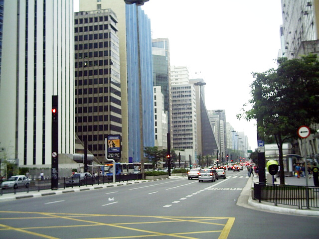

Passear na Avenida Paulista!
Um dos principais centros financeiros da cidade, a avenida Paulista também possui diversas opções de entretenimento. Endereço do Museu de Arte de São Paulo, MASP, do Teatro Gazeta e muitos outros, a região é de fácil acesso graças as diversas linhas de ônibus que cruzam a avenida e a linha de metrô que passa por baixo dela, tem uns barzinhos, e por aí vaí e que você descolado pode passear de boa sem ser roubado com seu celular.
A Avenida Paulista sempre é assunto. O que será que estão falando a respeito no Twitter?